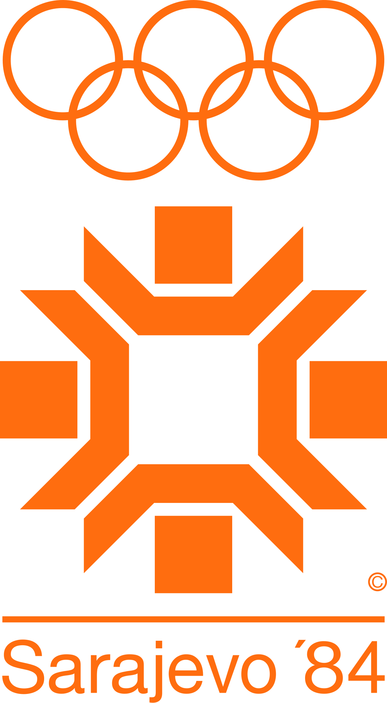

대표 로고대표 브랜드 마크
대표 로고대표 브랜드 마크홈 > 브랜드 매거진 > 챔스스포츠
챔스스포츠 Champs Sports
챔스 스포츠(Champs Sports)는 운동화·스포츠 의류·용품을 판매하는 미국의 스포츠 소매 체인이다.
산업 분야 스포츠·아웃도어 · 공개 등급 자료 기반 · 브랜드 평가 4.1 ★
한눈에 보는 브랜드
챔스 스포츠는 1984년 미국에서 설립된 스포츠 의류·운동화·용품 전문 소매 체인으로, 풋라커가 소유한 멀티배너 포트폴리오의 한 축이다. 울워스 산하에서 출발해 1980~90년대 전국 쇼핑몰 입점으로 급성장했고, 2001년 모기업이 베나토르에서 풋라커로 재편되며 전문 스포츠 소매 전략의 핵심 배너로 자리 잡았다.
두 전환점은 울워스 인수 후 몰 기반 대량 확장과, 2025년 딕스 스포팅 굿즈로의 풋라커 인수 완료다. 정점기 540여 개 매장에서 2025년 초 383개 수준으로 재편되며 본사는 플로리다 브래든턴에 둔다.
브랜드 관점
챔스 스포츠의 핵심은 풋라커 멀티배너 체제 안에서 '퍼포먼스에서 라이프스타일로 넘어가는 교차 구간'을 맡는 포지션이다. 풋라커가 코어 스니커 마니아, 키즈 풋라커가 성장기 아동을 흡수한다면, 챔스는 농구·러닝 등 운동 기능성과 거리 패션을 동시에 소화하는 청년·Z세대·알파세대를 겨냥한다.
차별 전략은 나이키·조던·아디다스·뉴발란스 등 핵심 브랜드의 독점 컬러웨이와 선수·콘텐츠 협업, 그리고 농구 코트와 커스터마이징 존을 넣은 체험형 매장(리테일테인먼트) 개편이다. 시장 함의는 분명하다.
JD 스포츠의 피니시라인 인수와 딕스의 풋라커 인수로 북미 스니커 유통이 소수 대형 플레이어로 압축되는 국면에서, 챔스는 점포 정리와 콘셉트 매장 집중이라는 선택과 집중을 강요받는다. 한국 독자에게 챔스는 직접 진출 브랜드가 아니라, 몰테일 등 해외직구·구매대행 경로로 한정판 운동화와 의류를 접하는 미국 현지 채널로 인식되는 점이 실질적인 접점이다.
시작과 성장
챔스 스포츠의 기원은 미국 전문 소매업이 백화점·잡화점(파이브앤다임) 모델을 밀어내고 카테고리 특화 매장으로 재편되던 1980년대 흐름에 닿아 있다. 1984년 설립된 챔스는 곧 울워스 코퍼레이션의 전문점 사업부에 편입됐고, 같은 그룹의 풋라커와 함께 운동용품 특화 매장 전략의 양대 축이 됐다.
첫 번째 전환점은 1980~90년대의 공격적 몰 확장으로, 1990년 약 200개였던 매장이 1992년 약 400개로 늘고 캐나다와 푸에르토리코 등 북미 권역으로 발을 넓혔다. 두 번째 전환점은 1997년 울워스 구조조정 이후 풋라커 멀티배너 포트폴리오로 재배치되고, 2001년 모기업이 풋라커로 사명을 바꾸며 스포츠 전문 소매에 전사 역량을 집중한 사건이다.
2000년대 초 스포츠 의류 시장 둔화로 일부 점포를 정리하는 진통도 겪었으나, 평균 약 330제곱미터 규모의 몰 입점 매장망을 기반으로 2019년 540여 개까지 외형을 키웠다.
브랜드 아이덴티티
챔스라는 이름은 '챔피언(champions)'에서 따온 것으로, 승자·정상급 선수·최고 기량이라는 연상을 직접 호출한다. 짧고 강하며 친근하면서도 동경을 자극하는 어휘를 택해, 기능 일변도의 전문 용어 대신 누구나 다가갈 수 있는 스포츠 팬 정서를 브랜드 핵심에 뒀다.
비주얼 아이덴티티는 역동적이고 도시적인 코트·스트리트 무드를 기조로 하며, 농구 코트와 멀티스포츠 존을 품은 체험형 매장으로 시각 언어를 확장한다. 타깃은 청년층과 Z·알파세대, 스니커 애호가, 액티브 라이프스타일 소비자다.
브랜드 보이스는 에너지 넘치고 자신감 있으며, 운동 기량과 스포츠 스타일을 같은 무대에서 말한다.
제품과 서비스
현재 상태
본사는 미국 플로리다주 브래든턴에 있다. 지배구조상 풋라커의 멀티배너 소매 브랜드였으며, 2025년 9월 딕스 스포팅 굿즈가 약 24억 달러(약 2조 4천억원대 추정)에 풋라커를 인수 완료해 현재는 딕스 산하 풋라커 사업 부문의 독립 배너로 운영된다.
운영 국가는 미국·캐나다 중심의 북미다. 현재 상태는 정점기 540여 개에서 2025년 초 383개 수준으로 줄어든 매장망을 정리하며, 인수 이후 추가 점포 폐점과 콘셉트 매장 집중 전환이 동시에 진행 중인 재편기다.
인수 후 세부 매장 수와 향후 정확한 정리 규모는 미공개.
BI/CI 변천사
대표 로고대표 브랜드 마크자주 묻는 질문
챔스스포츠의 브랜드 아이덴티티는 무엇인가요?
챔스라는 이름은 '챔피언(champions)'에서 따온 것으로, 승자·정상급 선수·최고 기량이라는 연상을 직접 호출한다.
챔스스포츠의 대표 제품은 무엇인가요?
취급 카테고리는 운동화를 중심으로 스포츠 의류, 운동용품, 액세서리이며 나이키·조던·아디다스·뉴발란스·언더아머·푸마·챔피온 등 주요 브랜드를 폭넓게 다룬다.
챔스스포츠의 본사는 어디에 있나요?
본사는 미국 플로리다주 브래든턴에 있다.
챔스스포츠의 공식 웹사이트는 어디인가요?
챔스스포츠의 공식 웹사이트는 https://www.champssports.com/ 입니다.
함께 읽을 브랜드
 스포츠·아웃도어 · 편집 검수아디다스(ADIDAS)
스포츠·아웃도어 · 편집 검수아디다스(ADIDAS)아돌프 다슬러가 1948년에 설립한 독일의 스포츠 브랜드로 운동화, 운동복, 운동용품 등을 제조 · 판매함. 아디다스의 정의 및 기원 아디다스(adidas)는 바이에...
 스포츠·아웃도어 · 매거진 완성나이키(Nike)
스포츠·아웃도어 · 매거진 완성나이키(Nike)나이키는 스포츠용품보다 자기극복의 서사를 더 강하게 판매하는 브랜드다. 신발과 의류는 제품이지만, 소비자가 실제로 구매하는 것은 기록을 갱신하고 자신을 증명하고 싶은...
 스포츠·아웃도어 · 편집 검수뉴발란스(New Balance)
스포츠·아웃도어 · 편집 검수뉴발란스(New Balance)뉴발란스(New Balance)는 미국 보스턴에 기반을 둔 비상장 운동화·스포츠 의류 기업이다.
 스포츠·아웃도어 · 편집 검수푸마(Puma)
스포츠·아웃도어 · 편집 검수푸마(Puma)푸마(Puma)는 독일 헤르초겐아우라흐에 본사를 둔 스포츠 의류·신발 기업이다.
 스포츠·아웃도어 · 편집 검수파타고니아(Patagonia)
스포츠·아웃도어 · 편집 검수파타고니아(Patagonia)파타고니아는 아웃도어 브랜드이면서 동시에 소비를 줄이라는 역설적 메시지로 신뢰를 쌓은 브랜드다. 제품을 파는 기업이지만 브랜드의 설득력은 자연, 책임, 오래 쓰는 태...

스포츠·아웃도어 · 편집 검수Sarajevo 1984Sarajevo 1984는 1978년에 기록된 Sport 계열의 브랜드 아이덴티티 사례입니다. Miroslav Antonić Roko, Branko Bačanović...
Ni
Nike Run
스포츠·아웃도어 · 편집 검수Nike Run나이키 러닝 라인 전용 시각 시스템은 나이키의 전 세계 러닝 활동을 하나의 정체성으로 묶는다. 핵심은 1980년대 나이키 락업에서 출발해 브랜드 이름 자리에 선언적인...
 스포츠·아웃도어 · 편집 검수슬래진저(Slazenger)
스포츠·아웃도어 · 편집 검수슬래진저(Slazenger)슬래진저(Slazenger)는 1881년 영국 런던에서 설립된 스포츠용품 브랜드로, 현존하는 세계에서 가장 오래된 스포츠 브랜드 중 하나로 꼽힌다. 테니스와 골프를...